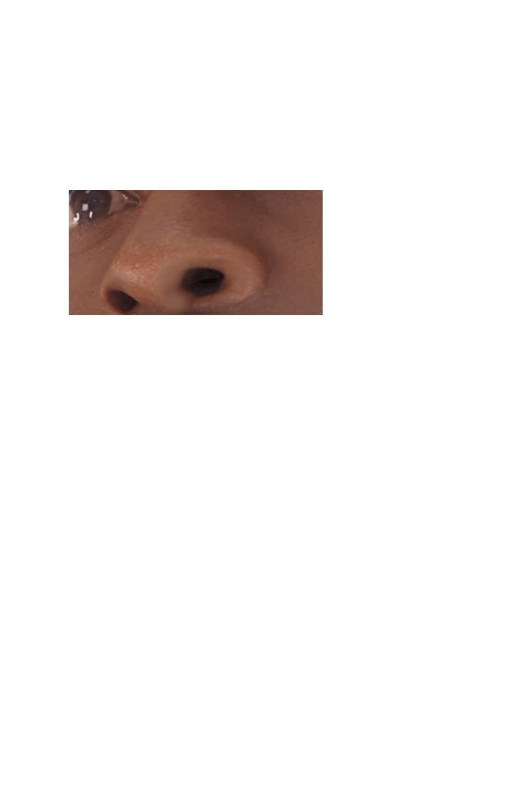
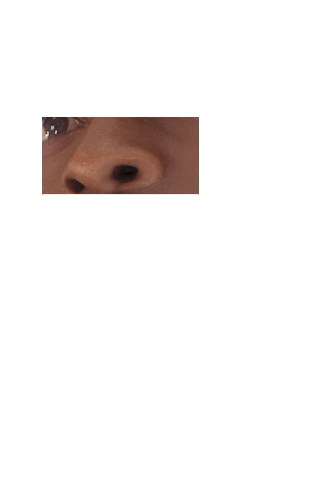
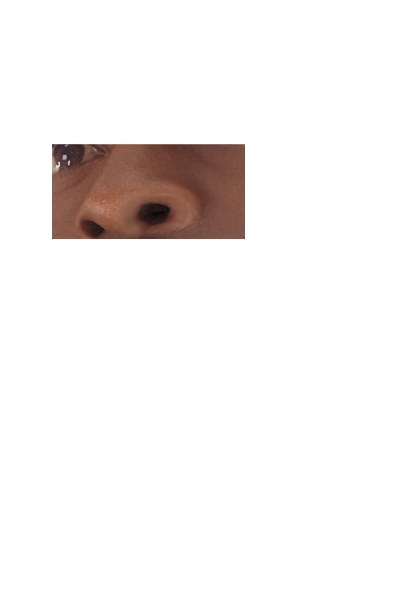

좀 괜찮아?
나는 몸을 기계로 바꿔 100년이 지난 지금까지 계속 살고 있었어.
저들은 순수 인간주의자
육체를 온전하게 보존하기 어려울 정도로 다친 사람들을
기계로 만드는 것을 막는 운동을 하고 있지.
너도 나처럼 기계 몸으로 옮기는 것은 어떨까?
이미 인공두뇌에 정신까지 완전히 옮길 수 있는 기술이 개발되었어.
만약 싫다면 의학 기술이 가장 발달한 화성으로 갈 수 있게 해줄게.
원래대로의 인간 몸을 선택한다.
기계 몸을 선택한다.


 
